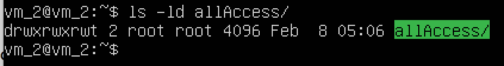
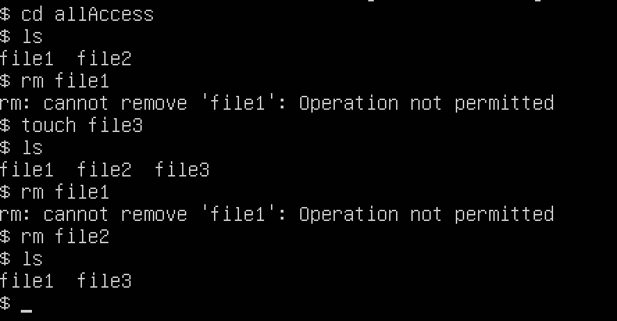

February, 07 2020
Sticky bit
For this blog, I decided to write about sticky bit
Think about the command below
chmod 0754 [file_or_directory_name]
Below is the break down of that command:
- chmod is a command to change the permission of a file or directory
- the 0754 can be broken down as
- the second digit will be the user permission which in this case the user have the full read, write and execute permission.
- the third digit will be the group permission
- the fourth digit will be other's (public) permission
- and the first digit?? well that is reserved for the sticky bit
What is a sticky bit?
"Sticky bit is a permission bit of a directory that can be set and unset which main purpose is to restrict so that only the owner of the file and the root user can rename or delete the file created inside the directory"
Why does it matter?
I learned that setting the sticky bit can help prevent accidental deletion of a file. What do I mean by that? Imagine if multiple group users have full permission to read, write, and execute. You want each users to be able to contribute and create their own file based on their tasks. However, while working, one of the user made a typo and ended up removing file created by other user. This can be a big chaos! In this case, sticky bit can limit the privilege while still keep the permission the same meaning that all user will still be able to create a file however they won't be able to delete the file that don't belong to them.
Below is the command to set the sticky bit on:
chmod +t [name_of_your_directory]
Example
I created a new directory named allAccess and I changed the permission using command below
chmod 0777 allAccess/
I also have previously created 2 users and set up their password using the command below
useradd [your_chosen_user_name]
passwd [your_chosen_password]
I then logged in as name1 and created a new file named file1 and logged in as name2 and created a new file named file2. See command below for creating new file
touch [your_chosen_file_name]
And then I logged back in as vm_2 user and set the sticky bit using:
chmod +t [name_of_your_directory]
As you can see using ls -ld we can see the permission for my directory-allAccess/ is set indicated by 't' as shown below

And then I logged back in as name2 and I tried to delete file1 that created by user name2 but I got denied. I still have the permission to create a new file and delete my file but I just can't delete a file that I don't create using this user name2. See picture below for details
